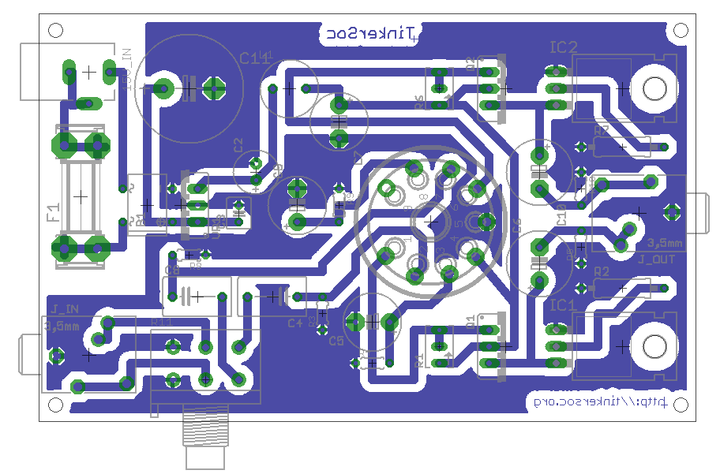

About Me

I have grown up in Devon, and been highly
interested in computers from an early age.
At secondary school I maintained my interest in
computing and began to learn about programming. I started
with Patrice
Pelland's book "Build a program now!". I came in contact
with the Network manager for our school and he spent time with
me teaching me more about programming.
I first heard about the Arduino in March 2009
when listening to the FLOSS
podcast and built my own Arduino from a kit. I have been in
love with electronics since and continue to maintain my hobby
with TinkerSoc at university.
My related tinkering projects can be found on
the section of this website dedicated to
it, here.
My Work
I'm studying for a BSc in Computer
Science with a Year in Industry. I achieved a
distinction in my first year of study, attaining an
average mark of 75% over the 8 modules studied. This
is a record I intend to keep up and better as I
progress through my course.
I've been elected one of two course
representatives for the 2nd year of my course, along
with Ed
Lepedus.
My GitHub
Some data from my GitHub profile.
Commits / Hour of the day
TinkerSoc
I am also the Communications Officer
for TinkerSoc
a society to which I am very committed and enjoy very much. My
role is to liase with other society members to keep them
informed of activities and to get their opinions and views back
to the rest of the committee. I also help design and develop
projects with them.
Many projects including the details to the Tube
Amplifier are detailed here.

Travel
In the summer before university a friend and I
travelled in China for 6 weeks as a sort of "mini gap year" as
neither of us wanted to take a full year out of education.
We started in Shanghai (pictured) and travelled
to Beijing, Chengdu, Lijiang and eventually onto Hong Kong. We
stayed in a Hindu monastery, and hiked to the Leshan Grand
Buddha, explored the technology markets in Hong Kong, walked
along the great wall and ate Peking duck, in Peking.
It was a fantastic experience, and I look
forward to going back.